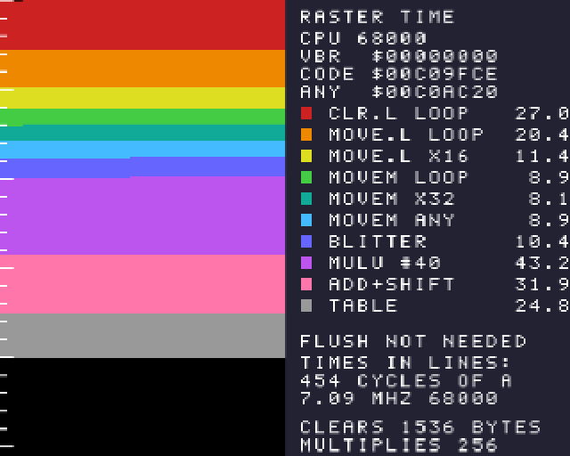
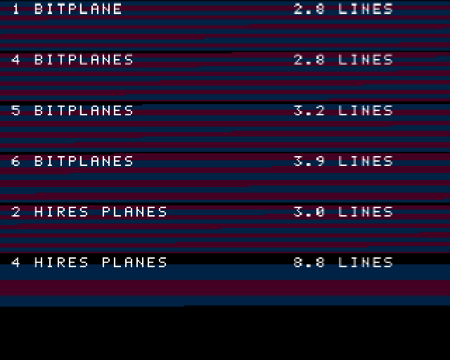
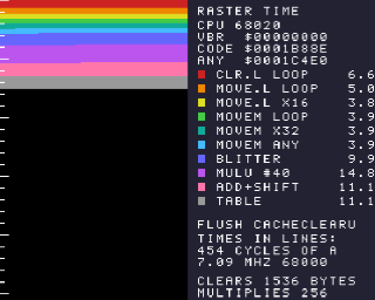
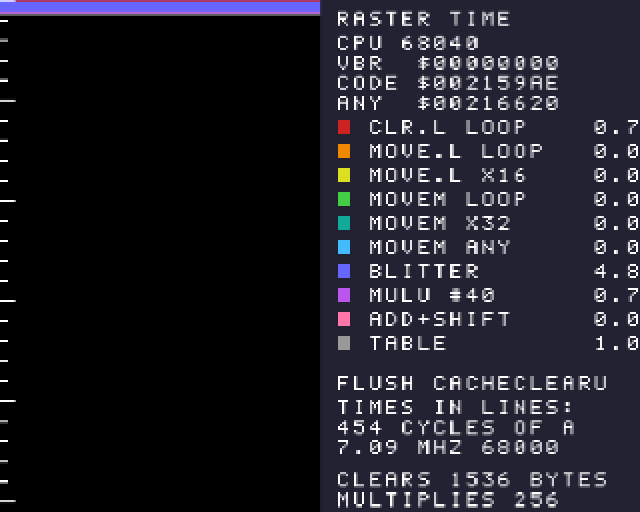

14. The 68000 and later processors
Every Amiga has a processor from Motorola's 68000 family, but not the same one. The Amiga 500 has a 68000 at 7 MHz; the A1200 a 68020 at 14 MHz; accelerator boards bring 68030s, 68040s and 68060s, and today FPGA processors that are faster still. A demo is usually written for the first and has to survive the rest.
This chapter is about both halves of that. First, how fast things really are on the A500's 68000: what each instruction costs, why the same code runs at different speeds in different memory, and which of v7's optimisation tips still hold. Then what changes on each later processor, and what breaks. Throughout, it measures rather than guesses, with the oldest tool there is: the raster bar.

Which processor is this?
Exec knows, and keeps it in AttnFlags, a word in ExecBase. Each bit says a processor (or a maths coprocessor) is there. From the NDK 3.2's exec/execbase.i:
| Bit | Name | Set for |
|---|---|---|
| 0 | AFB_68010 |
a 68010, and every later processor |
| 1 | AFB_68020 |
a 68020 and later |
| 2 | AFB_68030 |
a 68030 and later (Kickstart 2 on) |
| 3 | AFB_68040 |
a 68040 and later (Kickstart 2 on) |
| 4 | AFB_68881 |
a 68881 or 68882 maths coprocessor |
| 5 | AFB_68882 |
a 68882 (Kickstart 2 on) |
| 6 | AFB_FPU40 |
the 68040's own FPU |
| 7 | AFB_68060 |
a 68060 |
| 10 | AFB_FPGA |
an FPGA processor (named in the NDK 3.2) |
The processor bits add up: a 68030 sets bits 0, 1 and 2. So test the highest first. This is WhichProcessor from ch14_rastertime.s:
WhichProcessor:
move.l ExecBase.w,a6
move.w AttnFlags(a6),d0
lea Name68060,a0
btst #AFB_68060,d0
bne.s .known
lea Name68040,a0
btst #AFB_68040,d0
bne.s .known
lea Name68030,a0
btst #AFB_68030,d0
bne.s .known
lea Name68020,a0
btst #AFB_68020,d0
bne.s .known
lea Name68010,a0
btst #AFB_68010,d0
bne.s .known
lea Name68000,a0
.known:
rtsSome things to know about it:
- Kickstart 1.3 knows only bits 0, 1 and 4. v7 marked the others "V37+". On 1.3 a 68030 shows as a 68020, and a 68040 or 68060 isn't known at all (1.3 was never made for them, though FS-UAE will boot it on an emulated 68040).
- Bit 7 isn't set by Kickstart 3.1. Its exec doesn't know the 68060: it's the board's
68060.librarythat sets the bit, when it's loaded. Without it, a 68060 shows as a 68040. FS-UAE's 68060, run on Kickstart 3.1 with no 68060.library, did exactly that:ch14_rastertime.ssaid "CPU 68040". Not every 68060.library sets it, either: Thomas Richter's notes to his MMULib, in the NDK 3.2, say the one for the Apollo LC75 board didn't. So read "68040" as "68040 or later". - A non-zero
AttnFlagsdoesn't mean a faster processor. v7's warning still holds: a 68881 maths chip can sit beside a plain 68000. - It doesn't tell you the speed. A 68000 can be at 7 MHz or 14 MHz, and a 68030 anything from 16 to 50 MHz. Never use the processor type to time anything: use the beam, the CIA timers or the frame (general guidelines says more).
The 68000 in the Amiga 500
Clocks, memory cycles and raster lines
A PAL Amiga 500's 68000 runs at 7.09 MHz (an NTSC one at 7.16). Each time it reads or writes memory takes 4 of its clock cycles at least. The custom chips count in colour clocks, half the processor's speed: one colour clock is one memory slot, about 280 nanoseconds, and a PAL line is 227 of them. (The HRM's figure is 227.5, which is NTSC's average: its lines alternate between 227 and 228.)
So a PAL line lasts 454 of the 68000's clocks, about 64 microseconds, and a frame of 312 lines about 141,600. That's the budget. A routine that takes 20 lines takes a fifteenth of the frame.
Motorola's manual gives every instruction's time in clocks, written like 12(1/2): 12 clocks in all, of which 1 is a read and 2 are writes (each read or write takes 4 clocks; the rest is the processor working inside). The figures below are from the M68000 8-/16-/32-Bit Microprocessors User's Manual (Motorola, 1993, on bitsavers.org), checked against a second copy of the tables (the NVG Amiga archive's "MC68000 Instructions timing").
Sharing chip RAM: the processor's turns
The chips and the processor share chip RAM, and take turns at it, one slot each colour clock. The Hardware Reference Manual (HRM) explains the order: disk, audio, sprites and the display have first claim on the slots they're given; then the copper; then the blitter; and last the processor. And: "The 68000 uses only the even-numbered memory access cycles." The display's slots are the odd ones, as long as there are no more than four low-resolution bitplanes; so with up to four, a 68000 hardly notices the display.
More bitplanes than that, and the display starts taking even slots too. ch14_contention.s shows it. The copper divides the screen into six zones, each with a different display, and all the way down the processor does the same small job again and again: write 256 bytes to chip RAM. Each time, it changes the background colour, so each stripe is one go, and each zone's label gives the average time of a go there.

| Display in the zone | A500, 68000 | A500, program in fast RAM | A1200, 68020 |
|---|---|---|---|
| 1 bitplane | 2.8 lines | 2.7 | 0.8 |
| 4 bitplanes | 2.8 | 2.7 | 0.9 |
| 5 bitplanes | 3.2 | 3.1 | 0.9 |
| 6 bitplanes | 3.9 | 3.1 | 1.1 |
| 2 high resolution bitplanes | 3.0 | 3.0 | 0.9 |
| 4 high resolution bitplanes | 8.8 | 8.0 | 2.7 |
Up to four low-resolution bitplanes cost nothing. Six take 40% longer: the HRM says six bitplanes take half the processor's slots ("bitplane DMA steals 50 percent of the open slots"), but only while the display is being fetched, about 70% of each line. Four high-resolution bitplanes take every slot while the line is shown (the HRM: it "effectively locks out the 68000 ... from any memory access during the display"), and the job runs only in the borders, three times slower.
That's the display. The blitter, while it's running, takes the even slots too: see the blitter nasty.
Three things follow:
- The processor's own instructions are memory reads too. On an A500 the program is in chip RAM, or in the slow RAM of a trapdoor expansion, so even code that touches no data waits for its turns. With the program in fast RAM (the second column), only the job's writes wait, and six bitplanes cost 15% instead of 40%.
- Slow RAM is no faster than chip RAM. The A500's trapdoor RAM at
$C00000is on the same bus as chip RAM, and waits for the same slots; only the chips can't reach it. (General guidelines has more on slow RAM.) - Fast RAM doesn't wait at all. Real fast RAM (an A590's, or any Zorro board's) is on the processor's own side, and the chips never use it.
Not quite the manual's figures, in chip and slow RAM
There's a subtler cost. The processor's turns come every 4 clocks, and its memory accesses take 4 clocks; but many instructions spend 2 clocks working inside, between their accesses (DBF takes 10, a MULU #40 46). After those, the next access has to wait for the next slot. The HRM: "Some 68000 instructions do not match perfectly with the allocation of even cycles and cause cycles to be missed."
The raster time example shows how much. Here are its ten routines on the emulated A500, with the time Motorola's figures give (plus about half a line for the timing code around each), the time with the program in slow RAM, and with it in fast RAM:
| Routine | By the book | Slow RAM | Fast RAM |
|---|---|---|---|
Clear 1536 bytes, CLR.L (A0)+ loop |
25.9 lines | 27.0 | 27.0 |
... MOVE.L D1,(A0)+ loop |
19.2 | 20.4 | 20.4 |
| ... the same, 16 to a loop | 11.2 | 11.4 | 11.4 |
... MOVEM.L of 12 registers, in a loop |
8.8 | 8.9 | 8.9 |
... 32 MOVEM.Ls, no loop |
8.1 | 8.1 | 8.1 |
... MOVEM.L loop, into "any" memory |
8.8 | 8.9 | 8.8 |
| ... the blitter, the processor waiting | 10.4 | 10.3 | |
256 numbers times 40 with MULU #40 |
41.2 | 43.2 | 41.2 |
... with ADDs and a shift |
31.0 | 31.9 | 31.0 |
| ... from a table | 23.2 | 24.8 | 23.2 |
In fast RAM, the multiplications take exactly the book's time, to a tenth of a line: their code and data are all in fast RAM, and nothing waits. In slow RAM they take up to 7% longer. The clears write to chip RAM wherever the code is, so they wait either way; the 32 MOVEMs, each 104 clocks (a multiple of 4), wait least of all. On a real A500 with only chip and slow RAM, plan for the middle column.
(These are FS-UAE's figures. Its 68000 is cycle-exact, and where nothing waits it matches Motorola's figures to the tenth of a line, but it is still an emulator.)
What instructions cost
The 68000 figures for the instructions demos use most. An instruction that reads or writes memory also pays for its addressing mode, the second table; where a time has a "+", add that.
| Instruction | Clocks |
|---|---|
MOVEQ #n,Dn |
4 |
MOVE.W/MOVE.L Dn,Dn |
4 |
MOVE.L Dn,(An)+ |
12 |
MOVE.L (An)+,(An)+ |
20 |
ADD.W Dn,Dn / ADD.L Dn,Dn |
4 / 8 |
ADDQ.W #n,Dn / ADDQ.L #n,Dn |
4 / 8 |
ADDQ #n,An (word or long) |
8 |
ADDI.W #n,Dn / ADDI.L #n,Dn |
8 / 16 |
LEA d16(An),An |
8 |
ADDA.W #n,An / ADDA.L #n,An |
12 / 16 |
CLR.L Dn |
6 |
CLR.L (An)+ |
20 (it reads, then writes) |
LSL, LSR, ASL, ASR, ROL... .W by n |
6 + 2n |
... .L by n |
8 + 2n |
SWAP, EXT |
4 |
MULU, MULS |
38 + 2n (at most 70) + |
DIVU |
at most 140 + |
DIVS |
at most 158 + |
DBF (looping / falling through) |
10 / 14 |
Bcc.S, Bcc.W taken |
10 |
Bcc.S / Bcc.W not taken |
8 / 12 |
BRA |
10 |
BSR / JSR (absolute long) |
18 / 20 |
RTS |
16 |
MOVEM.L registers to -(An) or (An) |
8 + 8 per register |
MOVEM.L (An)+ to registers |
12 + 8 per register |
BTST #n,Dn |
10 |
| Addressing mode | Byte or word | Long |
|---|---|---|
Dn, An |
0 | 0 |
(An), (An)+ |
4 | 8 |
-(An) |
6 | 10 |
d16(An), d16(PC), $nnnn.W |
8 | 12 |
d8(An,Xn), d8(PC,Xn) |
10 | 14 |
$nnnnnnnn (absolute long) |
12 | 16 |
#n |
4 | 8 |
Multiplying takes 38 clocks plus 2 for each 1 bit in the source (MULU; for MULS, each change from 0 to 1 or 1 to 0 in it). So the source decides the cost: MULU #40,D0 is 38 + 2×2 + 4 (for the #40) = 46 clocks, while MULU #$FFFF,D0 would be 70 + 4. Put the number with fewer 1s as the source when you can.
Dividing is the slowest thing the 68000 does: Motorola gives at most 140 clocks for DIVU and 158 for DIVS, and says the best case is less than 10% faster. Avoid it in anything done often: multiply by a reciprocal, shift, or look it up.
Loops, unrolling and MOVEM
The clears in the table show the usual steps, from 27 lines down to 8:
CLRis slow in memory, because on a 68000 it reads before it writes:CLR.L (A0)+is 20 clocks against 12 forMOVE.L D1,(A0)+with D1 zero. (NeverCLRa chip register either: see general guidelines.)- A loop costs its
DBFeach time round: 10 clocks, against 12 for eachMOVE.Lin it. Unrolling, 16MOVE.Ls to eachDBF, pays for it once in 64 bytes, and nearly halves the time. MOVEMwrites many registers in one instruction, 8 clocks a long and 8 for the instruction: 48 bytes in 104 clocks with 12 registers, against 144 for 12MOVE.Ls.- No loop at all (32
MOVEMs one after another) saves a little more. The example doesn't keep 32 copies in its source: it writes them as it starts, from oneMOVEMit copies, and then clears the processor's caches before running them. General guidelines explains why that last step matters.
The blitter, on the A500, takes 10.4 lines for the same clear, while the processor waits for it. That's slower than the best processor loop, but the blitter leaves every other slot free, so the processor can work alongside it; the blitter chapter measures both together.
Multiplying faster
256 numbers times 40 took 43.2 lines with MULU, 31.9 with ADDs and a shift (n×4+n, then ×8), and 24.8 from a table made once at the start. On a 68000, a table usually wins, if there's the memory for it.
On the A1200 the order changes: 14.8, 11.1 and 11.1 lines. The table is no better than the arithmetic there, because the A1200's chip RAM is slow for its processor, and reading the table is a trip to it. v7's notes from Chris Green of Commodore said this in 1993: "it may be better to use calculations for some things that you might have used tables for on the A500."
v7's 68000 tips, checked
v7's "68000 Optimisation", by Irmen de Jong with notes by Comrade J, listed tricks that every coder then knew. Each is checked here against Motorola's figures. Most are right. Some save bytes but not time, two can give wrong answers, and one points at the wrong register.
| v7's tip | Checked |
|---|---|
BRA/BSR to BRA.S/BSR.S |
Shorter, not faster: a taken branch is 10 clocks (BSR 18) either way. Only a Bcc that isn't taken is quicker short: 8 against 12. |
MOVE.L #0,Dn to MOVEQ #0,Dn; CLR.L Dn to MOVEQ |
Right: 4 clocks, against 12 and 6. |
MOVE.L #0,An to SUB.L An,An |
Right: 8 against 12. |
MOVE.x #0,mem to CLR.x mem |
Shorter, but CLR reads the memory first, and it's no faster than storing a register that holds 0. |
CMP #0 to TST |
Right: TST.W Dn 4, CMPI.W #0,Dn 8. |
MOVE.L #n,Dn to MOVEQ |
Right, for -128 to 127: 4 against 12. |
ADD/SUB #n to ADDQ/SUBQ |
Right, for 1 to 8: ADDQ.W #n,Dn 4 against ADDI.W 8. On an address register ADDQ is 8, word or long. |
JMP/JSR to BRA/BSR |
Right (2 clocks), but only within a section: sections can be loaded anywhere. |
JSR x then RTS to JMP x |
Right. |
LSL #1 or #2 to one or two ADD Dn,Dn |
Right for words: 4 against 8, 8 against 10. Wrong for two on a longword: two ADD.Ls take 16, LSL.L #2 only 12. One ADD.L (8) still beats LSL.L #1 (10). |
MULU #2^n to a shift |
Much faster, but not the same: MULU uses only the bottom word of the register, a shift all of it. Clear the top word first, unless you know it's clear. |
DIVU #2^n to a shift |
As v7 says, there's no remainder in the top word. And: ASR isn't DIVS for negative numbers. DIVS rounds towards 0 (-7/2 is -3), ASR down (-7 shifted right once is -4). |
MOVEA.L #n,An to MOVEA.W #n,An |
Right: 8 against 12, for -32768 to 32767 (it's sign-extended). |
ADDA #n,An to LEA n(An),An |
Right: 8, against 12 (ADDA.W) or 16 (ADDA.L). |
LEA n(An),An to ADDQ.W #n,An |
Shorter, not faster: both 8. |
$0000nnnn to $nnnn.W |
Right: 4 clocks and a word, for $0000 to $7FFF (and $FFFF8000 up). move.l 4.w,a6 is the famous one. |
MOVE.L #x,An to LEA x,An |
No faster: both 12. LEA x(PC),An is 8. |
MOVE.L Ax,Ay and ADD #n,Ay to LEA n(Ax),Ay |
Right. |
x to x(PC) |
Right for reading (4 clocks less than absolute long). The 68000 can't write to a PC-relative address. |
(Ax,Dx.L) to (Ax,Dx.W) |
No faster. Motorola: "The size of the index register (Xn) does not affect execution time." |
BSET/BCLR/BCHG #n to ORI/ANDI/EORI.W |
On a data register, right: 8 against 12 to 14 (and the flags differ). On memory, no faster (BSET #n,(An) and ORI.B #x,(An) are both 16), and a bit operation on memory is on a byte, so its bit numbers aren't ORI.W's. |
BTST #n,Dn to ANDI.W |
8 against 10, but ANDI changes the register. Only if you're finished with it. |
MOVEM of one register to MOVE.L |
Right: 12 against 16. (MOVE sets the flags; MOVEM doesn't.) |
MOVE x,-(SP) to PEA x |
For a constant that fits in a word, right: PEA $1234.W is 16, MOVE.L #$1234,-(SP) 20. PEA (Ax) pushes Ax (as MOVE.L Ax,-(SP) does, in the same time), not what Ax points at. |
0(Ax) to (Ax) |
Right (4 clocks); assemblers do it for you. |
MULU #0 to MOVEQ #0; MULU #1 to SWAP, CLR.W, SWAP |
Right. For MULS #1, EXT.L alone does it. |
| Unroll loops | Right: see the clears above. |
Clear with MOVEM from all 15 registers, with the stack pointer as the pointer |
Fast, but don't use SP. With the system running, a task switch saves the task's registers on its stack, which is now your buffer, and as SP reaches the start of the buffer they land in memory below it. In supervisor mode an interrupt does the same. Use another address register: 14 registers of zero, or 13 and a loop counter, are almost as fast. |
| "If it's chip memory, use the blitter" | On an A500, the blitter alone was slower than a MOVEM loop here; working together they're fastest (the blitter). On faster processors the processor wins outright (below). |
| Always wait for the blitter after clearing with both | Right, and more than v7 knew: see the race. |
| "Don't set BLTPRI (#10 in $dff09a)" | The advice and the bit are right, but the register is DMACON, $DFF096. $DFF09A is INTENA. |
Use registers, not memory; pass parameters in registers; replace MULU/DIVU with tables |
Right on a 68000. Tables are no help on an A1200 (above). |
| Find the 10% of the code that takes 90% of the time | Right, and raster bars are how you find it (below). |
The 68010
The 68010 fits the 68000's socket, and some A500 and A2000 owners fitted one. Three differences matter to a demo:
- The vector base register. The exception vectors, the interrupts' among them, are at the VBR, not at address 0. The system may move them. The startup reads the VBR with
Supervisor()andMOVEC VBR,D0(a 68010 instruction, written as words so a 68000 assembler takes it) whenAttnFlagssays there's a 68010 or later. Interrupts explains it. MOVE SR,<ea>is privileged. Run in user mode, it's a privilege violation: a crash. Exec'sGetCC()gives the flags on any processor.- Exception stack frames have an extra word, so a handler that looks into the frame (rather than just ending with
RTE) must know which processor it's on.
The 68010 also has loop mode: a one-word instruction followed by a DBcc that branches back to it runs without fetching either instruction again. Motorola's manual lists which instructions can loop (moves, adds, compares and others, on (An), (An)+ and -(An)). MOVE.B (A0)+,(A1)+ and DBF take 14 clocks a byte in loop mode, against 22 on a 68000. v8 hasn't measured it.
The 68020 and 68030
The 68020 is a 32-bit processor (the A1200's 68EC020 has a 24-bit address bus; see general guidelines). The 68030 is much the same to a demo, with an MMU and a data cache added.
The caches
The 68020 has a 256-byte instruction cache: 64 longwords of the instructions it has run, kept on the chip. A loop that fits runs without reading its instructions from memory at all. One that doesn't fit, doesn't: each address has one place in the cache, shared with the addresses 256, 512... bytes away, so a loop over 256 bytes pushes part of itself out every time round. v7's advice from Chris Green: "A straight line loop 258 bytes long will execute slower than a 254 byte one." So on a 68020, unrolling stops paying when the loop outgrows the cache.
The 68030 has a 256-byte instruction cache and a 256-byte data cache. The system sets chip RAM so the data cache never holds it ("For all current Amiga models, Chip memory is set with Instruction caching enabled, data caching disabled": the CacheClearE Autodoc), so data the chips write is always what the processor reads. Instructions in chip RAM are cached.
Code that writes code has to clear the caches before running it: general guidelines explains, and has a routine that does it on every Kickstart. ch14_rastertime.s does it too, and says which way it cleared them: "FLUSH CACHECLEARU" (Kickstart 2.04 or later), "FLUSH MOVEC CACR" (Kickstart 1.3 with a 68020) or "FLUSH NOT NEEDED" (Kickstart 1.3 on a 68000).
The A1200

On an A1200 with no fast RAM, the routines take between a quarter and a half of their A500 time, with one exception: the blitter, which is the same chip at the same speed, took 9.9 lines. Every processor clear beat it, the best by two and a half times. v7 said "almost three times" for its A1200. With the blitter that slow by comparison, give the processor something else to do while it runs, or have the processor do the work.
New instructions, and what they cost you
The 68020 added instructions and addressing modes. v7 listed the useful ones:
move.w (a1,d0.w*2),d1 ; scaled index: d0*2, d0*4 or d0*8, at no extra cost
muls.l d2,d1 ; 32 x 32 bits
divs.l d2,d1 ; 32 / 32 bits
extb.l d0 ; byte to longword in one
bfextu (a0){d1:5},d2 ; a bit field: 5 bits from bit d1 on
tst.w table(pc,d0.w) ; TST and CMPI may read relative to the PCAlso the 64-bit forms of MULU.L/MULS.L/DIVU.L/DIVS.L, the rest of the bit field instructions (BFINS, BFFFO, BFSET, BFCLR...), 16- and 32-bit displacements in indexed modes, and memory-indirect addressing. Shifts take the same time whatever the count.
Use any of them and the program needs a 68020. On a 68000 each is an illegal instruction, and a crash. If that's what you want (most AGA demos assume a 68020), check as the program starts, and say so if it isn't there:
move.l ExecBase.w,a6
btst #AFB_68020,AttnFlags+1(a6)
beq NeedA68020 ; tell the user, and leaveOr keep two versions of the routine that matters, and choose one at the start.
It's easier to use them by accident than you'd think. ch14_contention.s, as first written for v8, had tst.b ZoneHires(pc,d4.w), which looked like ordinary 68000 code. It ran on the emulated A1200 and crashed the A500: on a 68000, TST can't read relative to the PC. (Limoniter's assembler took it without a word; tell your assembler which processor you mean, if it can be told, and test on a 68000.) The same goes for the other way round: the 68020 reads a word or a longword from an odd address (slowly), but the 68000 takes an address error, and the program stops. A demo tested only on an A1200 can fail on an A500 for both reasons.
The 68040 and 68060
These are many times faster than the chips they drive, and that's where their problems come from.
Bigger caches, written back later. The 68040 has 4K instruction and 4K data caches, the 68060 8K each. Both can run the data cache in copyback mode: a write to fast RAM can stay in the cache for a while before it reaches memory. Code that writes code must clear the caches (again, general guidelines); a trackloader that loads code must too. Chip RAM isn't data-cached, so the chips see what the processor writes there.
The processor outruns the chips. A 68040 can do far more between two chip RAM slots than a 68000 can. Code that only worked because the processor was slow breaks:
- The blitter. v8 found this in its own startup demo: the processor drew on the screen while the blitter was still clearing it. On a 68000 the blitter always finished first; on a 68040 it didn't. Always wait for the blitter before touching what it's working on (the blitter).
- Interrupts. A write to
INTREQcan still be on its way when theRTEruns, so acknowledge twice (interrupts). - Timing by instruction counts. None of it holds.

On FS-UAE's emulated 68040 every processor routine took a line or two at most (it varies from run to run), and the blitter about 4.5. Don't trust any of those figures: FS-UAE runs its 68030, 68040 and 68060 as fast as the computer running it can, not at any real processor's speed, and doesn't make them wait for chip RAM as a real one would (in ch14_contention.s every zone took "0.0 lines"); and with them its blitter isn't cycle-exact either (it took 10.4 lines on the A500). What they do show is true of a real one: the processor is so much faster than the blitter that it spends its time waiting for it.
MOVE16. The 68040 and 68060 have MOVE16, which copies 16 bytes at a time, from and to addresses on a 16-byte boundary, in a single burst. It's for copying in fast RAM. It isn't on the 68030 or anything earlier.
Instructions that aren't there. The 68040's FPU lacks some of the 68881's instructions (FSIN, FCOS and the rest), which 68040.library emulates. The 68060 also lacks some integer instructions, which its Motorola manual lists:
MOVEPCHK2andCMP2CAS2, andCASon a misaligned address- the 64-bit
MULU.L,MULS.L,DIVU.LandDIVS.L(32 × 32 to 64 bits, and 64 / 32)
Each traps to 68060.library, which does it in software: correct, but far slower than an instruction. The 32-bit forms of MULx.L and DIVx.L are there. MOVEP, made for 8-bit peripheral chips (it reads or writes every other byte), has been used in graphics routines for that odd ability; on a 68060, avoid it in anything that runs often.
The 68080
The Apollo 68080, in Vampire accelerators and the Apollo team's stand-alone machines, is a processor built in an FPGA: faster than a 68060 by its makers' figures, running 68000-family code, with instructions of its own as well. The NDK 3.2 names AttnFlags bit 10, AFB_FPGA, for an FPGA processor, and ch14_rastertime.s adds "FPGA" after the processor's name when it's set.
v8 hasn't run its examples on one, and FS-UAE doesn't emulate it, so this chapter says no more than that. Everything above about fast processors applies. If you use its own instructions, the demo is for Vampires only: say so.
Measuring: raster time
The quickest way to see how long something takes is to change the background colour when it starts. The beam draws the border in COLOR00, so each routine paints a band down the screen as it runs, as tall as the time it takes: one line is 64 microseconds. Every demo coder has done it, and it needs no tools at all.
ch14_rastertime.s does it with ten routines, one after another, from the first line of the display:
Frame:
move.w #FIRSTLINE,d0
bsr WaitLine ; start at the same line every frame
lea Tests,a6
.test:
move.l TEST_CODE(a6),d0
beq.s .tested
move.w TEST_COLOUR(a6),COLOR00(a5) ; this routine's band starts here
bsr BeamPosition
move.l d0,TEST_TIME(a6)
move.l TEST_CODE(a6),a0
jsr (a0)
lea CUSTOM,a5
bsr BeamPosition
sub.l TEST_TIME(a6),d0 ; how long, in colour clocks
move.l d0,TEST_TIME(a6)
lea TEST_SIZE(a6),a6
bra.s .test
.tested:
move.w #$000,COLOR00(a5)The bands are enough to compare routines by eye. For a figure, it also reads where the beam is before and after: VPOSR, read as a longword, has the line in bits 16 to 8 and the position across it (in colour clocks) in bits 7 to 0.
BeamPosition:
move.l VPOSR(a5),d0
moveq #0,d1
move.b d0,d1 ; the position on the line
lsr.l #8,d0
and.w #$1ff,d0 ; the line
mulu #LINECLOCKS,d0 ; 227 colour clocks a line, on PAL
add.l d1,d0
rtsSome things to keep in mind:
- Start at the same line each frame, or the bands jump about.
- The measuring costs something too: about half a line here, for each routine.
- Interrupts land in the middle. With the machine taken, only your own do; with the system running, its interrupts add a little, at random.
- Measure on the machine you're writing for, with its memory. The tables above show a routine's time changing with the memory its code is in.
- A frame overrun shows as flicker: if the work takes longer than a frame, the bands are drawn every other frame. The first version of the example did exactly that, on the A500.
Use it to find where the time goes before you optimise anything: the band that's tallest is the one to work on.
The examples
ch14_rastertime.s: ten routines each frame, each a band of colour; the panel names them, gives each time in lines, and shows the processor, the VBR, where the program was loaded, and how the caches were cleared after writing code.ch14_contention.s: the same job done again and again under six different displays, showing what bitplanes cost the processor.
Both were run both ways (taking the machine, and with the system running), on an emulated A500 with Kickstart 1.3 and 3.1; on Kickstart 3.1 with a 68020, 68030, 68040 and 68060, each with 8 MB of fast RAM; on Kickstart 1.3 with a 68020; on an A500 with a 68000 and fast RAM; and on an A1200. Each showed its effect, then the CLI with "back in AmigaDOS, return code OK".
How far to trust the figures: FS-UAE's 68000 and 68020 are cycle-exact (its log says so), and so is its blitter on those machines. Its 68020 on an A500 runs at about the A500's own 7 MHz, by our measurements (a loop of DBFs, and the MULUs, both fit that), and has the 8 MB of fast RAM; its A1200 runs at 14 MHz, with no fast RAM. On Kickstart 1.3, AmigaDOS loaded the programs into slow RAM even with fast RAM fitted. The 68030, 68040 and 68060 run as fast as the host allows, so their timings mean nothing.
What changed from v7
- Processor detection has bit 7 (the 68060, set by
68060.library) and bit 10 (FPGA processors), and the warning that Kickstart 3.1 alone calls a 68060 a 68040. - Instruction timings are given, from Motorola's manual, and measured on an emulated A500, in chip, slow and fast RAM. v7 had none.
- v7's 68000 tips are checked: some save bytes but no time (
BRA.S,ADDQforLEA,LEAforMOVE.L #,.Wfor.Lindex registers);LSL.L #2beats twoADD.Ls;ASRisn'tDIVS;PEA (Ax)isn't pushing what Ax points at;ORI.Wisn'tBSETon memory; BLTPRI is inDMACON, not at$DFF09A; and theMOVEMclear through SP is dangerous. - Chip-bus contention is explained and measured: the display's slots, slow RAM's waits, and instructions that miss their slot.
- The 68010 section has the VBR,
MOVE SRand the exception frames, not only loop mode. - The 68040 and 68060: copyback caches, the processor outrunning the chips,
MOVE16, and the instructions the 68060 doesn't have. The 68080 gets a mention. - v7's 68020 notes from Chris Green are kept, and the A1200's blitter-against-processor figure checked again: two and a half times, against v7's "almost three".
- Measuring with raster bars is shown, as a whole example.